The concept of entanglement, primarily studied in the context of quantum computation, has been applied recently for the characterization of quantum many-body states. In particular, the entropy of entanglement
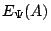
for a many-body state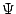
provides information complementary to that obtained from traditional measures of correlation, namely the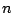
-particle correlation functions. To define bipartite entanglement, the system is partitioned into subsystems (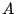
and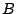
). Then is the von Neumann entropy of the reduced density matrix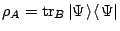
; thus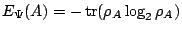
. The scaling of with the size of the partition is becoming a popular method of characterizing the quantum state . A lot is already known about the entanglement entropy of one-dimensional systems, although open questions remain. For higher dimensional systems, entanglement entropy is far less studied.For spin systems, partitioning the spins is equivalent to partitioning the sites. On the other hand, for models with itinerant particles (e.g., a Hubbard or
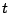
-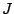
model), one can ask whether one should partition the particles into two groups, or partition the sites into two segments of the lattice, in order to get a physical measure of entanglement. Similarly, for quantum Hall states, one could partition either the particles or the angular-momentum orbitals. We have come to understand that this issue has not been addressed properly; both kinds of partitioning have been used without proper justification. We plan to calculate with the partitioning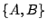
defined in both ways (particle and orbital partitioning). One interesting question is whether in some limit (e.g., for large ), the two methods of partitioning lead to the same scaling of with the partition size.For particle partitioning, we have identified the entanglement entropy of certain Affleck-Kennedy-Lieb-Tasaki (AKLT) states [4] as a route to calculating the entanglement entropy of quantum Hall states. The AKLT states are ground states of high-spin models. Their structure involves singlets between neighboring sites. The entanglement entropy of AKLT states in one dimension has already been considered by several authors [5,6]. For our purposes, the relevant states are the full-graph AKLT states, where every spin is involved in a singlet with every other spin. The AKLT wavefunction may be then written as a Jastrow wavefunction [7], similar to the Laughlin wavefunctions. We expect the entanglement of the full-graph AKLT state with
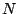
particles to be simply related to that of the -particle fractional quantum Hall state on a sphere.Our first calculations will include: (1) The entanglement entropies in 3-spin, 4-spin, ..., -spin full-graph AKLT states. (2) The relationship between entanglement (with particles partitioned) in full-graph AKLT states for spins, with spin
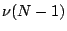
at each site, and the entanglement in the Laughlin state with index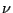
. (3) The entanglement entropy with orbitals partitioned. There are several variables to vary in each of these calculations: the total number of particles/spins/orbitals, the size of the smaller partition, and the Laughlin index .We have several motivations for this calculation. First, it would be one of the first entanglement studies for many-body systems in dimension larger than one. Quantum Hall states are relatively well-understood among correlated quantum states in two dimensions, and so may be expected to be a promising 2D quantum state to start with. An additional motivation comes from rapidly rotating trapped Bose gases, a system both K.S. and I are interested in. It is often said that the melting of a vortex lattice to give a sequence of quantum Hall states, is a transition to more ``correlated'' or ``entangled'' states; however this statement remains qualitative. We expect that entanglement entropy will give us a measure for distinguishing the many-body entanglement inherent in Bose condensates from that in quantum Hall states.